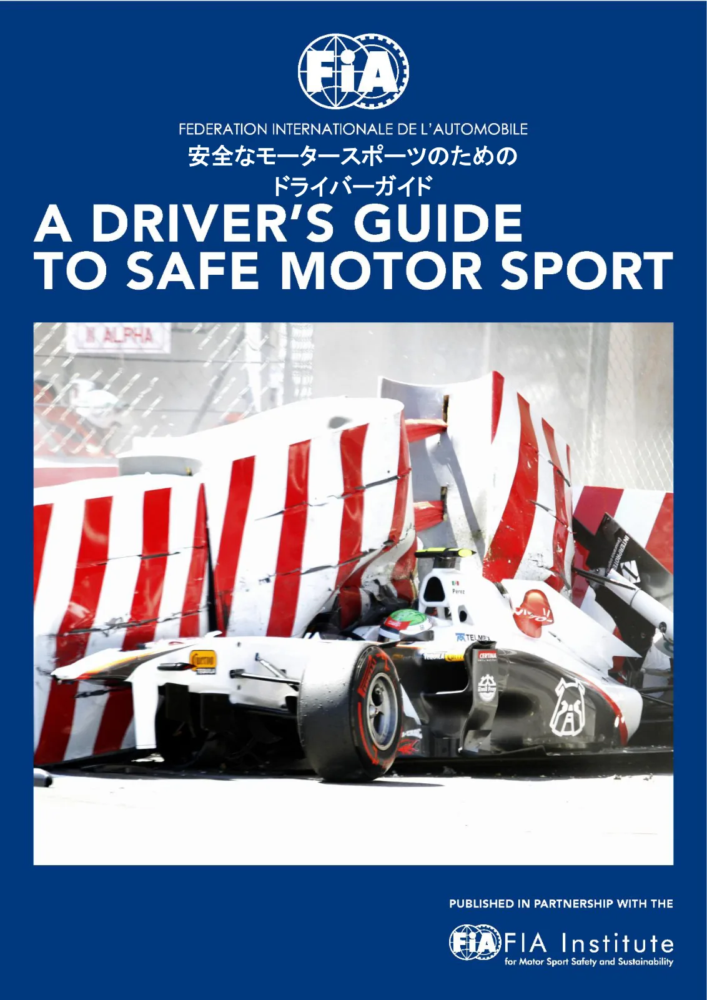

安全なモータースポーツのためのドライバーガイド_日本語版_2011
JAF の公式サイトではありません。JAF が公開する PDF を自動変換した非公式の検索用アーカイブです。記載内容は必ず JAF の原本 PDF で出典をご確認ください。

モータースポーツの安全と持続可能性のための
「FIA研究所」との共同発行
P.2安全なモータースポーツのためのドライバー安全ガイド内容1ドライバー個人の備え2ドライバー個人の装備品衣類ヘルメット前頭部拘束装置（FHR）耳の保護3仕事環境座席安全ベルトウインドウネット頭部および肩部用ネットパッド付け換気快適性の追加緊急スイッチ4競技会にて5事故が起きたら何をすべきか － すべての種類の競技会にてラリーでの事故に関する特定項目6救急処置7その他の情報付録１ モータースポーツにおけるアンチ・ドーピング付録２ 水分補給と食事付録３ 火災から身を守るために
P.3序文
「ここ数年で、モータースポーツの安全性は大変高いものになってきたため、自分に事故が降りかかることはないと考えているかもしれない。しかし、それは間違いである。事故は誰にでも起こりうるのだ。このガイドはモータースポーツにおける危険性を最小限に止め、出来る限り安全にモータースポーツを楽しむことを目的として作成された。最初はモータースポーツ初心者向けに意図されたものであったが、経験を積んだドライバーにとっても記憶を呼び覚ますものとして活用してもらいたい」FIAモータースポーツ安全研究所所長シド・ワトキンス教授「モータースポーツの危険性が大幅に削減されたという事実を、FIAは非常に誇りに思っている。モータースポーツは進化し、それと共に、車載されているすべての機械的また電子的なドライバー保護装置はいよいよ効果的なものになってきた。しかし、まだ多くの部分がドライバー個人にかかっているため、私はシド・ワトキンス教授と連携し、モータースポーツのキャリアを最良かつ最大限に安全な方法で始めることを強く勧めたい」FIA会長ジャン・トッド本安全ガイドの利用本ガイドは随時更新されるものである。ここに記される情報は、最新の確認された安全実践、および発行時点で有効な調査とテストの結果を編集したものである。それは最新の情報を保つために随時修正が加えられる。よって、時々確認をしていただきたい。モータースポーツに関わるすべての人は、そのスポーツの安全確保について共同で責任を負っている。すべての安全用品を、その製造者が指示する通りに選択し、取り付けし、維持し、また使用することが重要である。安全とは、そのための部品を入手し、規定を知っているということ以外にもある － 安全とは意識なのである。本ガイドは情報として公開されるものであり、規則としての発行物ではない。しかしながら、FIA規定の参照箇所が太斜文字で当該段落にて言及されており、付録４では参照のため詳細が一覧されている。ここで提案されている基本的な安全対策の多くは、実際はどの規定にも特に収録されていないが、採用し易く、強く推奨されるものである。FIA規定は http://www.fia.com - Sport-Regulationsで公開されており、基本となる「国際モータースポーツ競技規則」と様々な特化された付則（さらに、特定のFIA選手権規定）で構成されている。それら規定は、FIA国際ドライバーライセンスあるいは競技参加者ライセンスがエントリーの条件となっている競技会のすべてに遵守が義務付けられている。各国の国内競技会については、規定に多尐の変更が加えられる場合があるが、安全の重要性について変わりはない。FIA承認の保護装備品は、http://www.fia.com - Sport - Regulations - TechnicalList のFIAテクニカルリストに一覧が掲載されている。
P.4１ドライバー個人の備え付則L項第２章、第１条、第２条３項３、第３条
競技会にて参加する前に、全体的な健康状態に目をむけてみること。健康診断はいずれにせよライセンス取得に必須となるが、平均以上の状態を保つことが、能力を発揮し、個人的安全に寄与する。一旦健康診断に合格はしたが、その後病気にかかった場合は、それを申告しなければならない。視界スポーツを行なう場合、すばやい反応が不可欠であり、身体検査には、視力と色覚検査が含まれている。視力矯正が必要なドライバーは、非金属製フレームでゴーグル状の飛散防止レンズを着用し、さらにフルフェース・ヘルメットを使用すること。コンタクトレンズも使用可能であるが、競技参加中になんらかの異変を感じた場合は、使用を中止すること。救急医療や医療処置の対応の複雑化を招く可能性のある、コンタクトレンズあるいはその他の装備また補助具の使用がある場合には、競技に参加する前に、医師団長あるいは事故時の救急隊員に伝えておくことが重要である。サングラスよりは、着色バイザーおよび／あるいはウインドスクリーン・サンストリップを使用すること。障害付則L項第１章、第１０条および第２章、第１条４項、第１条５項身体的ハンディキャップは、モータースポーツ競技に参加する妨げになるとは限らない。当該国の統括機関が助言してくれるでしょう。ドーピング付則A項、第１条、２条、５条、９条、１０条、２０条、２１条付録１には、その他スポーツにおいても禁じられ、とりわけモータースポーツでは危険が高い場合のある「禁止物質」の意図的あるいは偶発的使用に関するドライバーの責任について説明している。加えて、さらに情報を得られる箇所についても示されている。禁止物質使用の痕跡は身体内に残り、吸収の数日あるいは数週間後にドーピングテスト陽性結果を出す可能性があることを覚えておきたい。薬物療法免除付則A項 第４条市販薬を含め、投薬が必要な場合、FIA規定を調べ、世界アンチ・ドーピング機構（WADA）の禁止物質一覧を確認し、投薬に「禁止される物質一覧」に掲載されているものがあれば、それを服用してはならず、一切のモータースポーツに参加できない。「レクリエーション用」ドラッグについても、もちろん適用される。しかしながら、禁止物質の使用を要する治療に応じる必要があり、妥当な代替の無い場合、「治療目的使用に係わる除外措置」の申請を行わなければならない。この免除措置申請には時間がかかるため、直ちに申請すること。何か疑義のある場合は、ドーピング・コントロールで陽性結果がでる危険を冒すより、スポーツ医師に問い合わせること。
P.5予防措置必要であれば、確認が容易なタグに、特別な医療的必要に関する詳細を記載して身につけること。そのタグは、救出中あるいは事件後の処置を複雑にする可能性のある、一切の医療的状況あるいは装置を確認するものである。これは、事故現場では特に重要で、医療行為者の診断の助けになる。ラリー競技での場合、ドライバーとナビゲーターはお互いに医療的状況を確実に確認し合うこと。
チェーン、お守り、および身体を突き通して取り付けられているものを含めたその他の貴金属類は、事故で負傷した場合の介入の妨げとなる場合がある。例えば唇および舌に付けられる装飾用ピアスは、医療処置手順を妨げる場合があり、眉に付けられたピアスはヘルメットにひっかかる可能性がある。従って、競技会の参加開始の前に、それらを取り外すことを考えること。同じように重要なことは、いかなる場合も、ガムを噛みながらの競技参加はしてはならない。事故の場合に気管に詰まれば、ガムが命取りとなることになる。また、義歯も取り外しておくことも意味のあることである。運転の前には排尿と小食が賢明である。通常の健康状態では自然と気づかされるであろう。理由がどのようなものであれ、体調が著しく思わしくないと感じた場合は、競技参加によって自分自身も他人も危険にさらすことに成り得るため、競技会不参加とするかどうかを考慮するべきである。食事について、特に摂取飲料について振り返ってみること。通常、競技の直前は、熱量および液体で満たすよりは、飲食を尐なめに回数を多くすること。長時間に渡る、気温の高い場所での競技会では、脱水症状に対する備えが必要である。付録２には、競技会前の水分補給と食事に関する提案が紹介されている。
P.6２ドライバー個人の装備品
一般的に、承認された評価の高い供給業者から装備品を購入し、適切な国内、あるいはFIAの基準をすべて満たしていることを確実にすること。基準は変更されるので、今現在の最新情報を把握しておく必要がある。衣類付則L項 第３章 第２条； テクニカルリストNo.２７ アンダーウェア： 外に見えないからといって、アンダーウェアを疎かにしないこと。アンダーウェアが最も重要なのである。肌に密着しているため、火災の場合は、それが最終の防御線となる。また、重度の火傷に対して最大５０％までの保護率増大を図ることができる。火炎保護のために開発された繊維（例：Nomex）製以外のものは、熱を肌に伝え、溶かし、張り付いてしまうため、避けるべきである。ソックスおよびグローブ： これらの装備品も耐炎性ものでなければならない。グローブは車体色と対照的な明るい色彩であれば、グリッド上あるいは運転中に問題がある場合の合図として、スターターやマーシャルに分かりやすい。ドライビングスーツ： 入手し得る最良のFIA承認耐火性オーバーオールを着用のこと。それが守るのはドライバーの生命である。スーツの保護性能を低下させることのないよう、洗濯指示を守り清潔に保つこと。スーツは、身体のどこをも締め付けるものでないこと。余裕のある状態が火炎からの保護性を高め、快適である。また、常に自分のドライビングスーツを着用すること。借用した装備品に頼ることがないこと。ドライビングシューズ： ドライビングシューズは耐火材質であり、サイズが合うもので、靴紐はペダルにからまることのないよう結ばれているものであること。ドライビングシューズは清潔に乾燥した状態を保つこと。また、雤天でのサービスエリアやパドックではオーバーシューズが役に立つ。FIA標準衣類およびその使用について、付録３にてさらなる情報を参照のこと。特別な個人的衣類： 例えばラリーなどの、いくつかの競技会では、サービスエリアや、スペシャルステージで車が止まってしまった時に備え、ラリージャケットや帽子を準備しておき、暖をとることは賢明なことである。身体のすべての熱低下の３０％は頭部から失われる。低体温症は選手権を獲得するチャンスに貢献しない。寒さから身を守るため、保温毛布を車載しておくのも良い考えである。防水性の（悪天候用用品）雤よけを持っている場合、それらは、他のものよりも燃えやすい場合もあることを覚えておくこと。その他の競技会では、日焼けや車内に蓄積された熱に対する保護を必要とする場合がある：ヘルメットを通じての換気も含めた適切な換気と、車両内での積極的水分補給の維持が、これと戦う第１の方法である。体温が38°Cを上回ると、運転能力は急速に低下し始める。
P.7ヘルメット付則L項 第３章 第１条 テクニカルリストNo.２５、３３および４１
新しいヘルメットの試着には時間をかけ、専門家の意見を仰ぎ、入手可能な限り良いヘルメットを購入すること。フルフェイスタイプのヘルメットは、オープンタイプよりも、火災の際の保護性を高め、顔面の負傷を軽減することができる。クローズドカーの場合は、オープンタイプでも容認されている。これは、負傷したドライバーの気道を確保するために、車内でヘルメットを取り外す必要がある場合に、それが難しいという理由による。
サイズは重要である：きちんとフィットしないヘルメットは、事故の場合には簡単に前頭部上で回転して外れてしまい、ヘルメットの保護性をゼロにしてしまう。サイズの合わないヘルメット、あるいはフィット感を得るためにさらにパッドを要するヘルメットは決して着用しないこと。サイズを確認するには、FIA承認のバラクラバを着け、額に深くかかるようにヘルメット位置を合わせ、その際に視界の最も上域にヘルメットのつばの端縁が入るようにすること。正しい位置にヘルメットがしっかり収まるように、保持システムを調整し、その状態のままヘルメットを取りはずそうとしてみる。その際にヘルメットが目より上に上がるようなら、サイズが大きすぎる。ヘルメットはどの方向へも動かすことが難い状態になっているべきであり、肌を動かすことなくヘルメットを動かせることがないこと。補助を誰かに頼んで確認する。まず、顎を胸の方へ引き下げるように首を曲げる。前に補助者を立たせ、ヘルメットの顎用ストラップが正しくフィットしており、ヘルメットが正常な位置にある状態で、補助者はヘルメットの後ろの底端部をつかみ、前へ引く。
このチェックでは、引く力が中程度で、ヘルメットが簡単に取り外されるようでないこと。基本的に、耐え得るだけ小さなヘルメットを選ぶべきであるが、特定箇所に圧力がかかるようであってはならない（または、頭部とヘルメットの間に隙間がないこと）。他者のヘルメットを借用しないこと！顎用ストラップは、不快感のない程度にできる限りきつくかけること。ダブルD字型リングのアタッチメントがついている場合には、第二リングにタブをつければ、引っ張るだけですぐにゆるむので、良いアイデアである。
頸部あるいは頭部に損傷が疑われる場合には常に、医療的監督下にて、正規の訓練を受けた医療チームのみがヘルメットの取り外し処置を行なわなければならない。このような場合に、丁寧にヘルメットを取り除けるように設計された単純な専用の装備品があり、その装備が義務付けられている選手権やシリーズもある。現在受け入れられているものには、空気圧式「エジェクト」、およびアライ、スタンド２１改良型バラクラバがある。これらの何れかを装備している場合、その旨をヘルメットに表示すること。
良い換気システムの付いた、使用する承認済み前頭部保持装置に適切なハードウェアを利用できるヘルメットを選ぶこと。色の選択も重要なポイントで、暗い色彩の場合、明るいものより熱を吸収するため、体温を上げ、ドライビングに影響を及ぼす場合もある。バイザーは、衝撃および火炎に対する保護として必ず必要な部分である。事故の場合にバイザーが上がってしまうことのないよう、確実動作の施錠機構が付いていること。
P.8新しいバイザーの保護フィルムを剥がすことを忘れないこと（フォーミュラ１ですら、そのようなことが起きた！）バイザー、そしてヘルメットは、パドックに戻るまで、減速走行周回の間も正しい位置に保持されること。
ヘルメットを改造したり穴をドリルで開けたりしてはならない。装飾する場合には、構造体に損傷を与えることがないよう特殊な塗料が用いられなければならない。ライニングを取り外すことは、製造者によってその取り外しについての指示が提供されていない限り、行なわないこと。
接着貼り付け式の付属品は避けること： どうしても必要である場合は、ヘルメットの製造者のもののみを使用し、簡単に打ち落とすことができるような固定方法をとること。飲料用チューブを取り付けたい場合、ヘルメット製造者の指示を求め、１つの直径の小さな穴にすること。
ヘルメットの中、あるいは外側に通信機器を取り付けせず、またいかなる方法でもライニングを阻害しないこと。飲料用チューブやイヤープラグ無線ケーブルが、ヘルメットの底部外側を通過する必要がある場合、ベルクロファスナーで緩衝パッドの底部表面に軽く取り付けることができるが、そのような配線等は、車両から出る場合あるいはヘルメットを取り外す場合に、すぐに外れなければならない。
付則J項 第２５３条８項３.５ テクニカルリストNo.２３
使用していない場合は、ヘルメットは常に保護された状態で保管されること。ヘルメットが接触しそうなロールケージ箇所にはパッドを付け、いかに軽い傷であろうとも、ヘルメットが衝撃による損傷を受けることがないようにすること。
ラリーでは、ステージとステージの間で、ラリー競技車両の中で、しっかりと支持され保護された状態で（できれば裏地付きのバッグに収納して）保管されること。ヘルメットは安全装備の中でも最も生命を守るものであろうから、大事にすれば、ドライバーを大事にしてくれる。ヘルメットを落としたり叩いたりしないこと。なんらかの衝撃を受けたり、引っかき傷を受けた場合、交換することを考えること。
単にガレージの床に落としたような場合であっても、衝撃を受けた後には尐なくとも専門家の目を通すこと。損傷を受けていなかったとしても、随時ヘルメットを新しくすることは賢明である。選んだヘルメットに適正なラベル貼付がされ、参加する活動のタイプに対して承認されたものであり、最新のものであることを確実にすること。前方への頭部の動きの抑制装置（FHR）付則L項 第３章 第３条；テクニカルリストNo.２９および３６ここ数年でドライバーの安全の最も著しい向上に貢献したものの１つは、FIA承認のHANS® （頭頸部支持具）および代替のFIA公認の前方への頭部の動きの抑制装置（ＦＨＲ）の導入である。これらの装置はドライビングスーツの上から肩にかけて装着するもので、ヘルメットにつながれている。それらは通常、肩ベルトの下に保持されるのが正しい位置である。承認された装置は、衝撃を受けた際に頸部が過度に伸ばされたり、ひねられるのを非常に有効に防ぎ、頸部にかかる負荷を劇的に軽減し、ロールバーやコクピットにぶつかることによる脊髄損傷や頭部衝撃についても同様な保護が見込まれる。
P.9FHRは、前方衝突事故にて顔面や頸部損傷の危険性を大幅に軽減し、正確に装着している限り、不利益は一切ない。車両によっては、座席、ヘッドレスト、あるいは肩ベルト取り付け部の調節が必要となる場合がある。すべての競技会でこれを使用することが強く推奨され、例外はほとんどなく、FIA国際カレンダー掲載のすべての競技会では装着が義務付けられる。
しかしながら、FHR用に承認を受けたヘルメット（FIAテクニカルリストNo.29参照）を着用し、そのヘルメット製造者あるいは製造者の承認を受けた専門家によってヘルメットにFHRテザー固定部を取り付けることが必須である。競技参加がクローズドカーである場合、事故の際にFHRが何かにひっかかった場合、いかにしてFHRをすぐ外すことができるかを知っておくこと。FIAが承認するものでない限り、ヘルメットに取り付ける装置類の使用は禁止されていることに注意すること。ネックブレースあるいは頸部カラーの専用品のひとつを使うことで、事故の場合に助けになったという実例はほとんどない。あるものは怪我を大きくするものすらある。
参照：「国際モータースポーツにおけるHANS®使用ガイド（2007年7月1日）」http://www.fia.com - Sport-Regulations - Drivers’equipment 耳の保護
騒音はモータースポーツの目に見えない、また見過ごされがちな危険である。高デシベルに長時間さらされた場合には、聴力を喪失するに至る場合や、甚大な健康被害をもたらす急性の耳鳴り（耳の中で鳴り響く）を招くことがある。手足の骨を折るというような損傷とは違い、聴力の損傷は回復しないので、常に良い耳の保護具（聴力保護具）を着用すること。通常の排気（開放排気）が使用されている場合は、成形イヤープラグを使用すること。最良の結果を得るには、保護具を選ぶ前に聴覚学の専門家に相談することが望ましい。
エンジンの騒音（またはコドライバーの大声音）とは別に、風音によっても被害がある。これも適正にぴったりと合うヘルメットを着用することが重要である正当な理由の１つである。
P.10３仕事環境注：快適性または安全性のための改造は、性能に一切の影響がない限り一般に認められるが、車両に変更を実施する前に、関連の変更を許可する技術規則（付則J項）を確認することが最良の方法である。
競技運転者として、以下の領域に注意を払うことで、できる限りドライバー・フレンドリーな車にすることができれば、パフォーマンスもなお良くなる。座席一般：付則J項第253条16項、GT：第258条14項4、スポーツカー：第258a条14項4、プロダクション・スポーツカー、CN：第259条14項4、スーパープロダクション：第261条6項2、スーパー2000：第263条6項2、F3、フリーフォーミュラ：第275条14項6、オートクロス、ラリークロス：第279条2項3、レーシングトラック：第290条2項18.4。テクニカルリストNo.１２および４０量産ベースの車両については、座席はFIA公認のものであること。以下を求めること：・ 強力な、側面からの特に腰周りに引き締まったフィット感のある支持・ 強力な、ドライバーに近接する肩の側面からの支持・ 強力な、側方および後方のヘッドレストFIA基準8862に合致する座席はこれらの要件を満たすものである。量産車両をベースとしない車両は、FIA公認座席、あるいは頑丈な、一体構造の、適正に取り付けられたシェルと、FIA基準エネルギー吸収パッドの付いた低摩擦性面の、コクピットに固定された強力な側方および後方のヘッドレストを有すること。テクニカルリストNo.１７座席が車両に搭載される際には：・ 座席の背面は、できれば垂直から30°以上傾きがないこと。・ 後部ヘッドレストの表面は垂直であること。・ 横のヘッドレストは、頭部の動きと視界の実際に合う程度に、できるだけ頭部と同じ高さで、頭部に近く設置されること。・ 座席は、常にその製造者により供給された座席パッドと共に使用されること； 過度なパッド使用は、事故の際に座席と座席ベルトが提供する保護性を損なう。・ 事故の場合、座席とベルトの組み合わせは、座席が床にしっかりと固定され続けている場合にのみ機能する。製造者の指示に従うか、またはこの非常に重要な構成要素の正規取り付け方法について、技術委員の助力を仰ぎ、定期的に座席と取り付け部ハードウェアと床を検査すること。安全ベルト一般：付則J項第253条6項、GT：第258条14項2、スポーツカー：第258a条14項2、プロダクション・スポーツカー、CN、フリーフォーミュラ：第259条14項2、スーパープロダクション：第261条6項3、スーパー2000：第263条6項3、F3、フリーフォーミュラ：第275条14項4、レーシングトラック：第290条2項6－レーシングトラックテクニカルリストNo.２４
P.11・ 可能な場合はいつでも、（最低）６点式座席ベルトを使用すること。・ チェーンを出すことはできない。ベルトも、一方向にのみ機能すること。それらは、できる限り短くなって最良の保護性を発揮するものであり、直線で負荷がかかるよう固定されていること。 常にベルトはきつく締めておくこと。・ ベルトの固定点は、製造者およびFIAによる最新のガイドラインに従って、専門家により取り付けされることを確実にすること。・ 腰部ベルトは、腹部ではなく骨盤にかかるようにすること： 外側の端部は、骨盤の骨の突出部に接すること。ベルトは、臀部の骨の突出部にもかかるように締めること。・ 肩部ベルトを締める時は、骨盤から腰部ベルトを腹部へ引き外すことのないようにすること。腰部ベルトの方を最初に締め、股ストラップの長さが適正であると、このようなことが通常避けられる。・ 肩ベルトの調整部を、首からできる限り離し低い場所に保つことが重要である。この位置が悪いと、重傷となる場合がある。・ ハーネスベルトは衝撃を吸収するために伸びる設計となっている。衝撃を受けた際に過度に前方へ動くことのないよう、（呼吸の妨げとならない程度に）できる限りきつく締めること。例えば、股ストラップをゆるくしたままにすると、衝撃を吸収する代わりにたるみ部分を縮める時に急激なショックを増やすだけである。フォーメーション、パレード、あるいはペースラップでハーネスベルトが落ち着いた後で、グリッド上で、できれば最終的な締め直しをするのは賢明である。・ 損傷を受けたことのあるベルトは機能が損なわれるだけである。切り傷や擦り傷がないかどうか定期的に検査し、疑義がある場合には交換すること。ハードウェアの曲がり、不正確な固定、あるいは座席経由や座席端部に渡るベルト掛けがしっかりしていないことで、問題が起きる。・ FIA公認のハーネスのみを使用し、決して中古品を購入あるいは使用しないこと。カサカサに
剥けた表面になったままのベルトをそのままにしておかないこと。特に、車検員に競技会失格とされる可能性がある。・ ベルトの外し方を熟知し、上下転倒した状態になる場合があることを覚えておくこと。・ 衝撃を受けた後は、常に新しくすること。注：低めの肩ベルト固定点が望まれるHANS®と共にドライバーが使用するため、左右それぞれに２本のストラップをもつ安全ハーネスシステムがFIAに公認されている。：詳細は「国際モータースポーツに於けるHAS®使用ガイド（2007年7月1日）」http://www.fia.com - Sport-Regulations - Drivers’equipment｡ ウインドウネット付則J項 第253条11項、261条6項6、263条6項6、279条5項5あるいは283条11項多くの分野の規定で、クローズドカーでは側面のウインドウに簡単に取り外しのできるネットを付けることが義務付けられており、転覆の際に、手や腕を守る役目は誇張されすぎることはない。ネット取り付けの場所を車両の外側に表示することが望ましい。
P.12頭部および肩部用ネット
クローズドカーの内部では、ドライバーの左右両側で、衝撃を受けた場合に頭部と肩の横方向の動きを制限するために、適正に設計され固定されたネットが利用できる。これらのネットを座席の背周囲に巻けば、後方の衝撃の場合に座席を支持するのにも役立つ。これは、重傷の危険性を最低限に抑えるのに役立つ、どの座席にも追加出来る重要な方策となり得るものであり、もっとも進化した現行のFIA基準8862に合致していない座席の性能をも改善できる。防護のための被覆一般：付則J項 第253条8項3.5、スポーツカー：第258a条14項1.63、F3,フリーフォーミュラ：第275条13
・ ドライバーの頭部、手および脚が接触する可能性のあるコクピット内部のすべての角と端部を探し、そこに湾曲部を作る、および／あるいは適切なエネルギー吸収素材でパッド付けすること。後者は、頭部用パッドのFIA仕様に合った材質、および「Confor」、「Sunmate」あるいは類似の手足用の発泡フォームとすること。・ これらの危険領域を確認するために、車両の内部に着座し、前方へ蹴り出し、次に外側へ蹴り出す。その時に、くるぶし、むこう脛、あるいは脚部、特に膝に何かが接触する場合、そこにはパッド付けすること。適正にパッドが取り付けられないと、衝突の際に痛みを生じ、あるいは負傷する可能性もある。・ ギアチェンジ： ステアリングホイールの後方にパドルを設置するのが理想的であるが、露出したシフトレバーの場合、ノブの頂点は25mm以下の半径を避け、シャフトは硬質の発泡フォームあるいは上述のようなゴムでパッド付けすること。・ 露出している場合、ギアシフトレバー機構は、レバーの基部の回転点組み立て部により、側方衝撃の際に大腿部を怪我しないよう、滑らかなケースによって保護すること。機構をカバーするには厚手のゴムを使用することで、実際のシフトレバー露出部はそのままでも、ドライバーを機構から保護することができる。・ FIA仕様に従った硬質の発泡フォームで、頭部の前方および側方50cmより近いところにあるロールケージのすべてのパイプ部分にパッド付けすること。 FIA仕様のロールバー用パッドは、木材のように硬く感じ、指で押圧できないように感じるかもしれないが、事故の場合にヘルメットをかぶった頭がぶつかることのみが想定されている。過去の事故でドライバーが重傷になったあるいは死亡に至った殴打のような衝撃があっても生命を落とすことがないよう、ヘルメットの特性を減ずる衝撃を与えて科学的に開発されてきたものである。通常の発泡ゴムでは、頭部が軽く当たるようなときには快適であっても、そのような場合には何の助けにもならない。・ ステアリング支柱およびそのブラケットにパッド付けすること。・ ニーパッドを着用することが望まれる。その場合は、両膝の外側と片膝の内側を保護する必要がある。これは側方の衝撃の場合に、膝の外側や低部に加えて、特に脚外側の膝上部の損傷を受けやすい部分（この部分は事故に関わらず、シングルシーターのコクピットの圧迫された環境にあってはかなり辛い）を保護する。この骨の近くには重要な神経が通っており、そこも損傷を受けやすい箇所である。適正なニーパッドを着用すれば、膝の内側同士がぶつかって怪我をすることも防ぐことができる。 シングルシーターでは、タブの内側と第１隔壁にパッドを付け、膝の間にパッドデバイダーの
付いた座席を使用することでも、これが達成できる。
P.13・ 足首は、ソックス内側やパッド付きブーツの使用で、同じ原理を使って保護することができる。・ 肘パッドも推奨される。特にシングルシーターでは慢性の炎症を引き起こしやすい箇所である。炎症のもうひとつの原因は、着用が義務付けられているFIA承認の長袖アンダーウェアを着ないで、耐火レーシングスーツを着用することによる。長袖アンダーウェアを着ないと、肘の保護されていない肌をスーツの繊維が直接こすることになる。・ すべての場合において、レース車両の制御および運転に干渉しないパッドを選んで取り付け
すること。換気
人間は身体の芯が38°Cを越すと、肉体および精神的な能力が低下することが科学的研究で証明されている。コクピットの内部温度が高くなるようであれば、外気の温度と湿度に対応するよう、十分な換気を行なうこと。その際に、コクピットに外気が入り込むのと同様に、コクピット内から空気が出て行くことができることに同等な注意が払われること。ウインドウにサンスクリーンを貼り、エンジンや排気の熱に対する断熱材を取り付けることは助けになる。とりわけ、付録２に説明されているように、競技会の間の適切な水分補給を確実に実施すること。同様の研究にて、FIA公認の耐火性レーシングスーツとアンダーウェアを着用しないことは、身体の芯の温度を下げることにはほとんど影響しないことが分かっていることに注意すること。しかしながら、火災の場合には、それを上げることには相当な影響を及ぼすであろうと予想され得る。快適性の追加一般：付則J項第252条7項3、グループN：第254条6項7.3、S2000：第254A条5項7.3、WRC：第255A条5項7.3、GT：第257A条1項4、ラリークロス：279条4項5オートクロス：第279条5項2.10、レーシングトラック：第290条3項21飲料ボトル、無線器材、携帯電話、ビデオカメラあるいはその他の物を車両に搭載する場合、適正な取り付けがなされないと、取り付けが外れ、例えばブレーキペダルの下に挟まったり、またはクラッシュの際にドライバーを打つあるいはドライバーがぶつかるといったことにより、致命傷を負う場合もあることを頭に入れておくこと。それらは40Gの減速度に耐え得るよう固定し、硬いあるいは鋭い部分がある場合、ドライバーから十分離して搭載すること。状況によって、灯火はドライバーの目をくらます場合があり、事故を誘発することもある（低い太陽あるいは、後続の車両のヘッドライト）。ウインドスクリーン上部にストライプを付ける、またはリアウインドウにテープを貼ることで、これを避けることができる。緊急スイッチグループN：付則J項第254条2項、グループA：第255条5項7.4、GT：第257条3項6.8.-9、スポーツカー：第258a条3項6.8-9、プロダクション・スポーツカー：第259条13項6、スーパープロダクションカー：第261条13項2、オートクロス、ラリークロス：第279条2項4電気カッオフおよび車載消火器スイッチは、ドライバー（およびラリーではコ・ドライバー）が座席から離れられない場合にも、簡単に届く場所にあることを確実にすること。
P.14４競技会にて
参加する競技会の種目に関する一般規則およびそれ独自の規則を熟知していること。明らかであろうか？ もちろんであろうが、全員が全員ではなく、例えば旗信号やラリーステージの合図を理解していない参加者があるとすると、その人自身にもその他のドライバーにも危険である。であるから、遭遇するであろうすべてのシグナルの意味と、レースあるいはラリーコースの規則を学ぶこと。サーキット：付則H項 第2条4項および2条9項、オートクロス、ラリークロス：第3条2項3、ラリー：第5条5項4、クロスカントリーラリー：第6条5項、ヒルクライム：第7条2項4同様に重要なのが、参加する競技の大会特別規則と公式ブルテンを注意深く研究すること。それらには、グリッド前およびスタートの手順、セーフティカーの運用、フィニッシュ時にパークフェルメへの移動方法などについて、特別な指示事項が記載されている場合があるからである。それらのすべてが、安全と成功の機会の双方に貢献する。「フィニッシュするためには、まずはフィニッシュしなければならない」規則について、何か疑問がある場合は、質問すること。例えばトレーラー牽引などの速度規制について、その土地の法規を知っておくことも意味がある。目立つ規則違反はこのスポーツの評判を下げることになり、個人的なレベルでは、悪評がたてばスポンサー探しに悪影響がでる。競技会自体においては、一般的安全と、サーキットで「己の欲するところを人に施せ」を念頭におきながら、競技走行すること。プラクティスでクリアラップをとるために、ゆっくりと走りたい場合、あるいはそうしなければならない場合に、他のドライバーの妨げになったり、危険とならないようにしなければならない。ミラーの調節を確実にし、他者を確認できるようにすること。モータースポーツでの事故は、多くの原因によって引き起こされるが、ドライバーのミスが最も多い原因であるので、自身の命は文字通り自身の手中にある。とりわけ、競技役員の指示には常に従うこと。彼らの指示は安全上の理由に基づくことが多く、そうでなかったとしても、競技役員には礼儀正しくあること。マーシャルを確保するのが容易でない競技会もあり、ドライバーに怒鳴られていては、問題解決に役立てない。注：自分自身をマーシャルとすることを考えてはどうか？ そのスポーツに何らかの還元をするばかりではなくて、どのように競技が運営されているか見届けることは、良い成績をあげるのに、実際役立つ場合がある。サーキットで停車しなければならない場合、あるいは車両を放置する場合付則L項、第4章、第3条
・ できる場合は常に、車両アクセスポイント近くに停車させること。そこは、防護体に塗装された大きな（１ｍ四方の）蛍光オレンジパネルか、出口通路を表すその他の目立つマーキングで示されている。火災の場合には、マーシャルポストか、アクセスポイントよりは小さな蛍光オレンジのパネルか、防護体の上部にサーキットによって異なるマーキングで示される消火器設置所付近に停車するよう努めること。プラクティス走行の間に、そのような箇所がどこにあるのが確認しておくこと。・ 選択肢がある場合は、コントロールを失った車両が最終的にたどり着くような場所あるいはランオフエリアには決して車両を放置しないこと。
P.15・ 放置する場合は、ステアリングホイールをつけたままニュートラルにし（動き出す危険性のない場合）、適切な場合には、イグニッションキーを正しい位置に置く。・ サーキットあるいはレースのタイプにより、現地の慣習がその他の指示をしていない限り、車両の中あるいは周囲に留まることなく、安全に行なえることができる状況になり次第、防護体の外側へでること。・ 防護体の外に出るまで、ヘルメットは外さないこと。・ 安全な場所へ移動できるまで、チーム員を呼ばないこと。・ マーシャルに指示されない限り、コースを横切らないこと。・ 車両にオイル漏れがあることが分かっていたら、安全に行なえることができる状況になり次
第、レーシングラインを外れ、次にトラックから外れること。ピットへ戻ろうとしないこと。ラリーで停車しなければならなくなったら
・ 付則H項第5条5項5の指示する通りに行動すること。一般回収サービスが到着するまで車両と共に留まり、次に手伝うため、また損傷を拡大させないよう、パドックへ移される車両に同行することが望まれる。
P.16５事故が起きたら何をすべきか － すべての種類の競技会にて
適切な準備を整え、正しい装備をし、規則を勉強していても事故に遭う場合がある。事故が目前に迫っていたら・・・・・ 車両の部品に接触する前に加速できる距離が尐ないほど、その時に受ける打撃が尐ない。・ 側方あるいは斜角の衝突では、できれば衝撃を受ける側へ（ヘッドレストやサイドパッド内へ）頭部と脚部を動かし、逆方向へ動かさないこと。・ 前後端の衝突では、頭部をリアヘッドレストに着け、着用しているのであれば、前方への頭部の動きを抑制する装置を機能させること。・ ステアリングホイールに手を置いたままとするが、親指は出しておくこと。・ 筋肉の緊張によって衝撃に耐えようとしないこと。サーキットでは、事故が発生した場合、後続車が事故車を避け、マーシャルが安全に救助に向かうことができるよう、マーシャルは直ちに後続のドライバーに減速するよう合図する。マーシャルはレースコントロールに事故状況の程度を報告する。通常は、数秒以内で、救助のマーシャルが到着する。事故に関連したドライバーはマーシャルに協力しなければならない。付則H項 第２条５項２ 付則L項 第４章 第３条（サーキット）車両が危険な位置にある場合、その危険を取り除くため、プラクティスセッションは中止され、レースは中止、中断あるいはセーフティカーによって非競技化される（この場合かなり時間がとられる場合がある）。ドライバーが負傷している、あるいは閉じ込められている場合、専門の医療および救出クルーが派遣される。マーシャル自身で火災を消火し始める。マーシャルがドライバーの腕をとるか、指示を与える場合があるが、それは、ドライバーが脳震盪を起こしている、あるいはショック状態にあり危険であると知っているからである。その場合、マーシャルがドライバーをできる限り直接安全な場所へ移動できるよう協力すること。また、マーシャルの案内なしにコースを渡らないこと。事故に遭った場合、救出チームが救出を行なうにあたってドライバー側が何かできることはあるか？
・ 落ち着くように努めること。・ カットオフスイッチを操作して、電気供給を遮断し、熱くなっているエンジンへの燃料供給を停止すること。・ 火災が発生している場合、スイッチを操作して車載消火器を作動させること。クローズドカーより脱出することが難しい場合、足でウインドスクリーンかリアウインドウを押し外すことが可能である場合がある。・ 車両がトラック上または道路上にある場合、車両を離れることが安全であると確認されるか、マーシャルが案内に来るまで、ベルトを外したり、ヘルメットを脱いだりしないこと。
P.17・ 車両が転覆している場合、頭で着地して頸部を損傷することがないよう、座席ベルトを外すあるいは緩める前に、まず自分自身を支えること。・ ステアリングホイールを外して（が外れて）いたなら、元に戻すことを忘れないように。・ 怒りや分別を失った状態にある内に、後続車両の前に飛び出ていくよりは、車両から出る前に、５つ数えることは価値ある場合がある。・ 負傷していたり、動くことが困難である場合、救出クルーが到着するまで車両内に留まること
が最良策である。到着したクルーに問題を理解させ、負傷を悪化させることなく搬送を監督できるよう、医師が到着するまで待機させること。不運にしてクラッシュしてしまった場合、医師の言う通りに行なうこと。事故が大きくなかった場合であっても、医師により、その後の検査に向かうように言われる場合もある。その場合は、従うこと。それがドライバーの利益となる。付則L項第２章第２条および３条ラリーでの事故に関する特定項目：ラリー：付則H項 第５条５項４、５条５項５、５条６項１
・ シリーズあるいは選手権の規則、および競技会の特別規則書を注意深く読み、オーガナイザーの安全対策を理解し、国際ラリーのステージで車両がクラッシュした場合や停止した場合に使用される、合図および手順については特に熟知しておくこと。救助を必要としているクルーを、車両を止めて支援すること、あるいはラリーコントロールに通知する必要が生じる場合がある。・ 携帯電話を携行し、ラリーコントロールの電話番号を控えておくこと。・ 応急処置キットを確認し、ラリーで必要となる内容物を揃えておくこと。・ステージのどこにラジオポイントがあるか知っておくこと。リタイヤあるいはクラッシュした場合、
車両近くの安全な場所に留まること。しかしながら、車両を放置することが避けられない場合、自分自身がどこに居るのか、そして、何故に車両から離れる選択をしたのかを明らかにしておくこと。車のそばにいる二人を見つけるほうが、森をさまよう者を捜すよりも簡単である。
P.18６応急処置
基礎的な応急処置の訓練を受けておくことは価値がある。ラリーでは、事故現場に最初に到着する人となる場合もある。現場に最初に着いた場合、何をすべきか知らなければ、どのように感じるかを考えてみることだ。また、それ以外の場合でも、救出チーム員が何をしているのかについて理解する助けとなろう。
国内外の様々な組織団体が応急処置と蘇生術の訓練を最小限の費用で受ける機会を提供している。これで命を救えるのだ。
７その他の情報
ライセンス発給／承認団体、ASNおよびFIAのウェブサイトでブルテンを読み、安全に関する最新情報を得て、競技参加者の安全、マーシャル役務、救出および応急処置についてのビデオや発行物の内容を知っておくこと。大会特別規則書をないがしろにしないこと。
P.19付録１ モータースポーツにおけるアンチ・ドーピング
ドーピングには関心がないから、それについては注意しておかなくてよいと考えているかもしれないが、それは間違いであり、毎日摂っている製品の中にも規定違反となる物質は多くあり、ドーピングテストの結果、陽性の結果を出してしまう場合もあるので、注意しなければならない。心に留めておかなければならない点がある：・ 故意に摂ったあるいは投与されたものであろうとなかろうと、身体に入った物質についてはすべて自分に責任がある。・ アルコールおよび大麻類の使用は禁止される。これらは両方ともドライバーの行動を変えてしまい、後者は摂取後、数週間経っても検出可能である。・ サプリメントは、内容成分を必ずしもすべて記載していないことに注意すること。・ ドライバーは自分がアスリートであることを、薬剤師同様に医師にも伝えること。○ 病気になると、通常は禁止されている薬剤を使用する必要がある（なぜなら、許可されている薬剤をそれに代えて使用することができないからである）。その場合は、「治療目的使用に係わる除外措置」請求を担当医師とともに記入し、審査を受けるために国内のアンチ・ドーピング機構に（規定に明記されている特定のケースではFIAへ直接）送付しなければならない。○ 特定の薬物成分は国によって異なる場合があるので、海外に行く際には使用する必要のある薬物すべてを持って行くよう努めること。○ 目薬や点鼻薬あるいは咳止めのように、明らかに作用が穏やかな薬であっても、禁止される物質を含んでいる場合もある。・ 従って、自分で治療することは避ける、または尐なくとも極度に控えること。そして常に何を摂っているのかを把握していること。補足説明として、ＦＩＡのアンチ・ドーピングに関するウェブページを参照しておくこと： www.fia.com/en-GB/sport/anti-dopingこのウェブページから（さらには多くの国内スポーツ権能（ASN）のアンチ・ドーピングに関するウェブページから）、FIAレース・トゥルー・Ｅラーニングのコースやクイズにつなげることもでき、それらは英語、フランス語、ドイツ語、スペイン語、およびロシア語（将来的にはさらに多くの言語）にて利用可能である。それは、知っておかなければならないアンチ・ドーピングのキーポイントを、約３０分以内ですべて提示する。このコースを必ずとっておくこと。その３０分で、無知が故にドーピング陽性結果を出してしまうことを避けることによって、生活を変えることができる。
P.20世界アンチ・ドーピング機構（WADA）の「禁止リスト」（競技スポーツにおいて摂取が禁止されているすべての物質と方法）が、現在無料でiPhoneアップルストアで利用できる： http://itunes.apple.com/us/app/wada-prohibited-list2011/id408057950?mt=8アンチ・ドーピングについて質問があれば、各国のアンチ・ドーピング機構あるいはASNに連絡してください。
P.21付録２ 水分補給と食事競技会の間の水分補給と食事 － ＦＩＡメディカル委員会発行の公式声明
ドライビング中の発汗により失われる水分は、ドライバーや外気温度によって、１時間当たり0.5~1リットルの間に達する。この水分不足状態は、ドライバーの運転性能を著しく低下させ、安全を大きく脅かすものとなる場合がある。
発汗率やミネラル損失は、個人により大きく異なるため、補水をいつ行なうかについて一般的見解を述べるのは難しい。
以下はもともと、グランプリに参加するＦ１ドライバー（強度な肉体的および精神的疲労を高気温の中で２時間経験）に向けて作成された勧告事項であり、個人、また活動のタイプに応じて適応されること。何を飲むべきか２時間以下のレースでは、ミネラル塩の損失は取るに足らない： 研究結果が示す限りでは、最良の飲料は炭酸の含まれていない水であり、その他の液体の良さは本格的な研究が証明するものはない。水と共に、果汁、例えばフルーツジュースやトマトジュースのような飲料も摂れるであろう。飲料摂取は次において行なうことが必要である：レースの前、レース中、レースの後。最大５リットルの液体を、１回の摂取を適量に分けて、決勝レースの日に、気候条件に応じて摂取することができる。例えば：レース前の午前中に、１リットルレースの間に、１または２リットルレース終了後に、２リットル。喉の渇き症状が現れるまで待たないこと。脱水症状を避けるには遅すぎる場合がある。
P.22決勝日の一般的助言
除外されるべき：
アルコール消化のよくない食べ物：メロン、きゅうり、きゃべつ、玉ねぎ、スパイス類、こってりしたあるいは揚げた食べ物。避けるべき：炭酸飲料個々の過敏程度によるが、コーヒー、紅茶大量の果物大量の菓子注意すべき：冷凍食品は、完璧な管理下にあったもの以外はバクテリア感染の危険を増幅する。サーキットあるいはラリーでは常に確実であるとは言えない。味覚に合うことが重要 － そうでなければ、競技会での技能発揮と安全のために、必要なだけ食べることはできない。推奨される：炭酸を含まない水、果汁、エネルギードリンク糖質はゆっくりと吸収される（パスタ、米、パン）カロリー価の高い、吸収の早い食べ物（ドライフルーツ）決勝日の提案メニュー朝食：多めに； １回の量は尐なく、飲物は飲みたいだけ飲むレース前： 必要なら尐量の食事：例えば、パン、チーズ、ハム、ミックスサラダあるいはプレ ーンパスタ、果物１片、数枚のビスケットを含む飲料：レース前の２時間で量を分けて約１リットル（最大2/3の水、1/3のフルーツジュース）レース前に排尿を忘れないことレース中：レースの距離によるが、車内にドリンク供給器の取り付けが望ましい。レース中の摂取液量は水１または２リットルで、低糖質のフルーツジュース（あるいはエネルギードリンク）と混ぜ合わせることもできる（１リットルにつき25gr未満）。レース後：十分な量の飲料を摂取する。食事に尐量の塩を加えると、損失分を補充できる。フルーツジュース1/4リットルで、２～３リットルの発汗によるミネラル塩損失量、つまりレース中の最大損失量を取り戻すことができる。トマトジュースは同様の性質をもつ。
P.23付録３火災から身を守るために耐火および耐熱衣類FIA基準8856-2000には下記に再印字されたガイドラインが含まれている。完全な（全身用の）アンダーウェアとバラクラバを着用することというFIAの主張は、燃料火災の影響に関する長年の経験とテストを重ねた結果からのものである。しかしながら、レーシングスーツが提供できる保護は、それでもなお限られていることを忘れてはならない。明らかに損耗のないスーツを着用していても、火傷を受ける可能性があり、その場合、水で火傷部分を冷却することが勧められるが、皮膚に張り付いてしまった衣類を剥がさないこと。FIA基準8856-2000からの抜粋 防護服は、自動車レースにおいて発生しうる全ての危険から身を守ることができるわけではない。本基準に規定されている被服は、最低限の着心地を保ちながら熱と火炎に対する防護機能を提供するものである。きつ過ぎる着衣は防護レベルが引き下げてしまうので、着用者はきつ過ぎないものを確実に選択し、実際の使用状況下における快適性を確保すること。 最大の防護状態を得るために、FIA国際モータースポーツ競技規則の付則L項（第3章、第2条）に推奨されている被服類を使用すべきである。着用者は、首、手首、および足首の部位が特に損傷を受け易いことについて注意すること。首、手首、および足首は、尐なくとも２種類の防護服で常に覆わなければならない。 オーバーオールに直接なされる刺繍は、より効果的な遮熱のため、最も外側の層にのみ縫い付けること。 バッジの基部となる素材は、バッジが燃焼することによりオーバーオールの耐火性能に影響を及ぼすのを防ぐために、ISO 15025規格を満たす耐火性のものでなければならない。 バッジをオーバーオールに縫い付ける糸は、ISO 15025規格を満たす耐火性のものでなければならない。 バッジ上の刺繍糸あるいは被服の最外層の刺繍糸も、ISO 15025規格を満たす耐火性のものとすることが推奨される。 バッジおよびサインをオーバーオールに取り付ける場合、熱融着タイプの使用はせず、また被服を切断してはならない。注: これらの条件に合致しない刺繍がなされていた場合は、当該オーバーオールの公認が中止され、また着用者はその違反が発覚した大会の車検委員によって失格とされる場合がある。
P.24付録４ FIA規定およびガイドと承認された製品のテクニカルリストの索引これらは、http://www.fia.com - Sport - Regulations/TechnicalList およびFIA自動車競技イヤーブックおよびブルテンに公示されているものである。章項目参照1.医療検査付則L項 第II章 第4条. 障害付則L項 第I章 第10条、第II章1.4 & 1.5項ドーピング定義、テスト、制裁: 付則A項 1, 2, 5, 9,10, 20, 21項治療目的使用に係る除外措置: 付則A項 第4条2.耐火災被覆付則L項 第III章 第2条テクニカルリストNo. 27. ヘルメット付則L項 第III章 第1条テクニカルリストNos. 25, 33, 41. 前方への頭部の付則L項 第III章 第3条. 動きの抑制装置テクニカルリストNo. 29, 36. 国際モータースポーツにおけるHANS®使用についてのFIA研究所ガイド3.座席一般: 付則J項 第253条16; GT: 258条14.4; ｽﾎﾟｰﾂｶｰ: 258a条14.4; ﾌﾟﾛﾀﾞｸｼｮﾝｽﾎﾟｰﾂ, CN: 259条13.5, 259条14.4; ｽｰﾊﾟｰﾌﾟﾛﾀﾞｸｼｮﾝ: 261条6.2; ｽｰﾊﾟｰ2000: 263条.6.2; F3, F/Libre: 275条14.6; ｵｰﾄｸﾛｽ, ﾗﾘｰｸﾛｽ:279条2.3; ﾄﾗｯｸ: 290条2.18.4. テクニカルリストNo. 12, 40. 安全ベルト一般 : 付則J項 第253条6; GT: 258条14.2; ｽﾎﾟｰﾂｶｰ: 258a条14.2; ﾌﾟﾛﾀﾞｸｼｮﾝｽﾎﾟｰﾂ, CN, F/Libre:259条14.2; ｽｰﾊﾟｰﾌﾟﾛﾀﾞｸｼｮﾝ: 261条6.3; ｽｰﾊﾟｰ2000:263条6.3; F3, F/Libre: 275条14.4; ﾄﾗｯｸ: 290条2.6–ﾄﾗｯｸ テクニカルリストNo. 24. ウインドウネット 付則J項 第253条11, 261条6.6, 263条6.6, 279条5.5, or 283条11.
P.25防護のため被覆一般: 付則J項, 第253条8.3.5. ｽﾎﾟｰﾂｶｰ:258a条14.1.63; F3, F/Libre: 275条13. テクニカルリストNo. 17, 23 快適性の追加一般: 付則J項 第252条7.3; Gr.N: 254条6.7.3; S2000: 254A条5.7.3; WRC: 255A条5.7.3; GT: 257A条1.4; ﾗﾘｰｸﾛｽ: 279条4.5; ｵｰﾄｸﾛｽ: 279条5.2.10; ﾄﾗｯｸ:290条3.21 緊急スイッチGr.N: 付則J項 第254条2; Gr.A: 255条5.7.4; GT:258条3.6.8-9; ｽﾎﾟｰﾂｶｰ: 258a条3.6.8-9; ﾌﾟﾛﾀﾞｸｼｮﾝｽﾎﾟｰﾂ:259条13.6; ｽｰﾊﾟｰﾌﾟﾛﾀﾞｸｼｮﾝ: 261条13.2; ｵｰﾄｸﾛｽ,ﾗﾘｰｸﾛｽ: 279条2.4. 4.信号、ｾｰﾌﾃｨｶｰ ｻｰｷｯﾄ: 付則H項 2.4, 2.9項; ｵｰﾄｸﾛｽ,ﾗﾘｰｸﾛｽ: 3.2.3項; ﾗﾘｰ: 5.5.4項; ｸﾛｽｶﾝﾄﾘｰ: 6.5項; ﾋﾙｸﾗｲﾑ: 7.2.4項車両停止ｻｰｷｯﾄ: 付則H項 2.5.2項; 付則L項 第IV章, 第3条ﾗﾘｰ: 付則H項 5.5.5項5.事故付則L項 第II章, 第2条および第3条ﾗﾘｰでの事故付則H項 5.5.4項, 5.5.5項, 5.6.1項